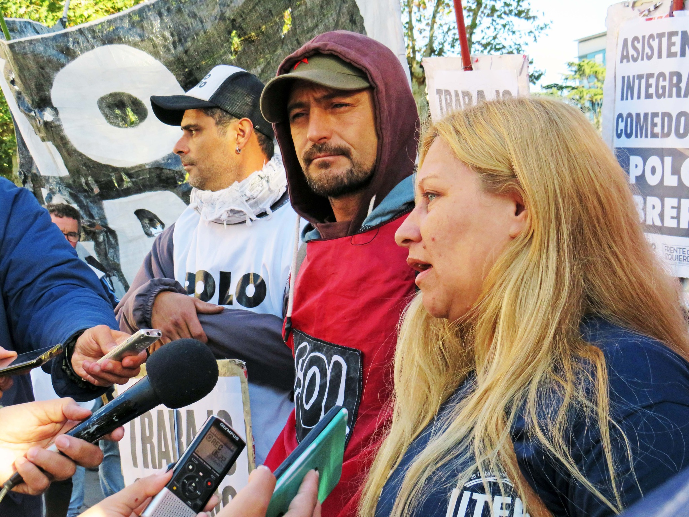
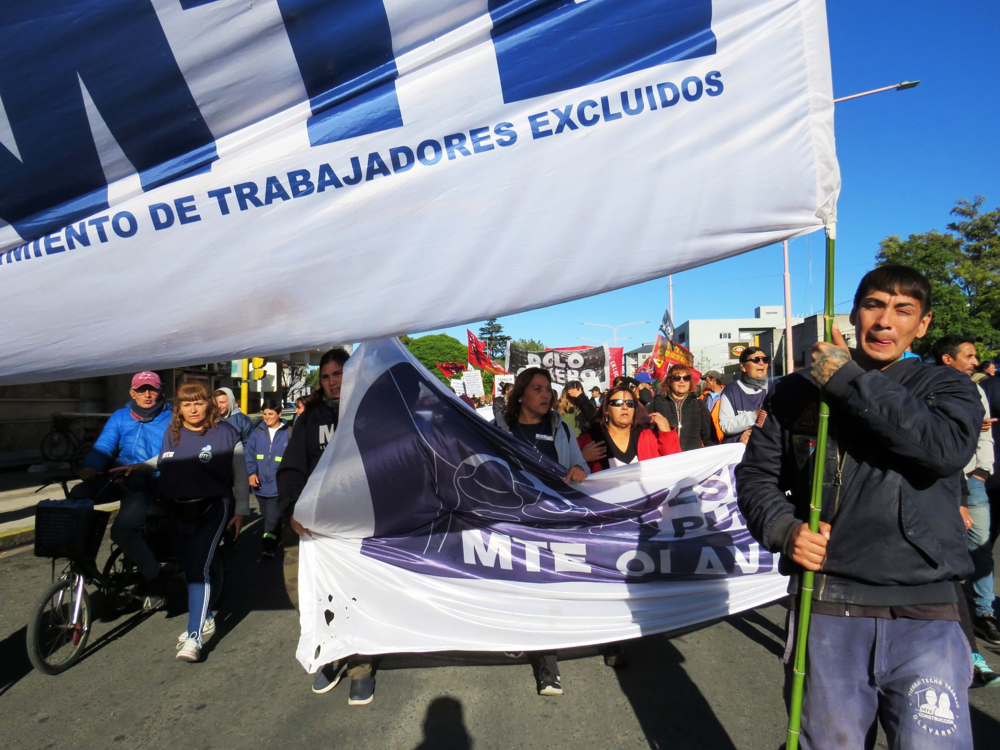

Integrantes de la Unión de Trabajadores de la Economía Popular (UTEP), la Unidad Piquetera (UP) y otras
organizaciones sociales marcharon este jueves en todo el país. El epicentro tuvo lugar en Ciudad de Buenos
Aires, con marcha al Ministerio de Desarrollo Social, en una acción conjunta de protesta para reclamar una
solución al actual problema alimentario.
El dato más trascendente es que, después de mucho tiempo, organizaciones sociales que forman parte de la
estructura del actual gobierno nacional confluyeron con el resto de los movimientos de izquierda. Se trató de
una jornada para reclamar puntualmente contra las políticas económicas del FMI. Y también tuvo su réplica a
nivel local.
Con una concentración en el Paseo Jesús Mendía, esta mañana el MTE Olavarría (UTEP) y el Frente de
Organizaciones en Lucha y el Polo Obrero (Unidad Piquetera) se manifestaron en el marco de la jornada, con
reclamos puntuales también a la gestión municipal.

Luego de un breve corte de calle en Rivadavia y San Martín, movilizaron desde el centro hasta Colón y Pringles,
donde sostuvieron luego un nuevo corte, pero sobre las vías del tren.
Martín Roldán, del FOL Olavarría, expresó que es “una marcha nacional histórica, donde hemos confluido todas las
organizaciones que estamos dentro de la Unidad Piquetera y las de la UTEP. Una movilización contundente en
Capital, con las consignas del No pago al FMI”.
“Esa deuda es la que más adelante va a hambrear al país y ya lo está haciendo (…) en abril tuvimos un 8.7% de
inflación, hay 10% de aumentos en los productos, las familias no llegan a comprar la mercadería”, consideró.
Y sintetizó: “Es una situación que no da para más. Los planes de lucha se van a ir fortaleciendo cada vez más
porque ahora hay una unidad que tal vez antes no la había tanto”.
Por su parte, integrantes del MTE Olavarría aprovecharon la conferencia para cuestionar la falta de respuestas
del gobierno local, con fuertes cuestionamientos al programa GIRO: “Son los que nos quieren sacar todo el
material con el que trabajamos”, indicó una cartonera.

“Nosotros hace cuatro años y medio que estamos funcionando como Cooperativa Viento en Contra, son muchos los
compañeros que comen gracias a la cooperativa. No entendemos por qué ahora salió este programa GIRO que no nos
deja trabajar (…) y el intendente no nos escucha y no quiere hablar con nosotros”, lamentó.
“Lo que están haciendo con el programa GIRO es privatizar los recursos que tenemos nosotros para la
Cooperativa”, expresó otra de las integrantes del MTE, quien además exigió la apertura de nuevos programas de
trabajo a nivel nacional, como el caso de los Potenciar Trabajo. “Es una ayuda enorme porque la plata no
alcanza”, contó.